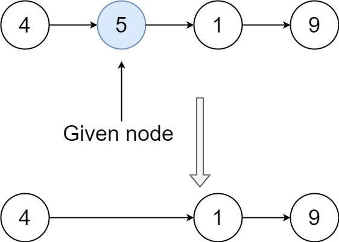
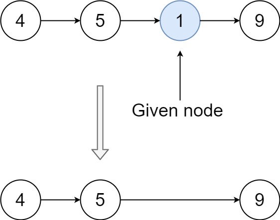

237. 删除链表中的节点
| 题目信息 | 内容 |
|---|---|
| 难度 | 中等 |
| 核心模式 | 复制后继节点的值并跳过其后继（原地删除） |
| 时间复杂度 | O(1) |
| 空间复杂度 | O(1) |
题目与约束
有一个单链表的 head，我们想删除它其中的一个节点 node。
给你一个需要删除的节点 node 。你将 无法访问 第一个节点 head。
链表的所有值都是 唯一的，并且保证给定的节点 node 不是链表中的最后一个节点。
删除给定的节点。注意，删除节点并不是指从内存中删除它。这里的意思是：
-
给定节点的值不应该存在于链表中。
-
链表中的节点数应该减少 1。
-
node前面的所有值顺序相同。 -
node后面的所有值顺序相同。
自定义测试：
-
对于输入，你应该提供整个链表
head和要给出的节点node。node不应该是链表的最后一个节点，而应该是链表中的一个实际节点。 -
我们将构建链表，并将节点传递给你的函数。
-
输出将是调用你函数后的整个链表。
示例 1：

<strong>输入：</strong>head = [4,5,1,9], node = 5
<strong>输出：</strong>[4,1,9]
<strong>解释：</strong>指定链表中值为 5 的第二个节点，那么在调用了你的函数之后，该链表应变为 4 -> 1 -> 9
示例 2：

<strong>输入：</strong>head = [4,5,1,9], node = 1
<strong>输出：</strong>[4,5,9]
<strong>解释：</strong>指定链表中值为 1 的第三个节点，那么在调用了你的函数之后，该链表应变为 4 -> 5 -> 9
提示：
-
链表中节点的数目范围是
[2, 1000] -
-1000 <= Node.val <= 1000 -
链表中每个节点的值都是 唯一 的
-
需要删除的节点
node是 链表中的节点 ，且 不是末尾节点
核心不变量
既然拿不到前驱，就让后继节点"顶替"自己：把
node.next的值复制到node，再跳过node.next，等价于删除了node。
完整推导
思路推导
-
常规删除的痛点：删除单链表某个节点，通常需要它的前驱
prev，执行prev.next = prev.next.next。但本题只给你node本身，无法访问head，也就永远找不到前驱，常规套路直接失效。 -
偷梁换柱：既然删不掉"自己"，那就让下一个节点替自己"消失"。把
node.next.val复制到node.val，此刻node在数值上就变成了原来的下一个节点。 -
跳过后继：再执行
node.next = node.next.next，把真正的后继节点从链表中摘掉。于是链表长度减 1，原本要删除的值也不复存在，且前后顺序保持不变。 -
边界安全：题目保证
node不是末尾节点，所以node.next一定存在，两次访问都不会空指针。
Java 实现（deleteNode）
/**
* Definition for singly-linked list.
* public class ListNode {
* int val;
* ListNode next;
* ListNode(int x) { val = x; }
* }
*/
class Solution {
public void deleteNode(ListNode node) {
// 1. 把后继节点的值复制到当前节点，让当前节点在“值”上变成后继
node.val = node.next.val;
// 2. 跳过真正的后继节点，等价于删除了当前节点
node.next = node.next.next;
}
}
复杂度
- 时间：O(1)，只做了两次指针/赋值操作，与链表长度无关。
- 空间：O(1)，没有使用任何额外空间。
易错点与扩展（面试高频考点）
- 不要试图遍历找前驱：本题根本拿不到
head，任何"从头找 prev"的写法都不可行，必须想到值覆盖。 node.next一定非空：题设保证node不是末尾节点；若换到"可能删除尾节点"的变体，此方法会空指针，需要额外信息。- 不要真的去释放内存：
node.next = node.next.next只是改变指向，题目只要求逻辑删除，不要求delete原后继对象。 - 值唯一是重要前提：正因为所有值唯一，"覆盖值"才不会误删其它同值节点。
- 面试追问：如果要删除的正是尾节点又无法访问
head，怎么办？答案是无法在 O(1) 内完成，需要额外信息（如双向链表、或允许遍历拿到前驱）。
力扣原题
C++ 实现
/**
* Definition for singly-linked list.
* struct ListNode {
* int val;
* ListNode *next;
* ListNode(int x) : val(x), next(nullptr) {}
* };
*/
class Solution {
public:
void deleteNode(ListNode* node) {
node->val = node->next->val; // 后继值覆盖当前节点
node->next = node->next->next; // 跳过后继节点，等价删除当前节点
}
};
Python 实现
# Definition for singly-linked list.
# class ListNode:
# def __init__(self, x):
# self.val = x
# self.next = None
class Solution:
def deleteNode(self, node):
"""
:type node: ListNode
:rtype: void Do not return anything, modify node in-place instead.
"""
node.val = node.next.val # 后继值覆盖当前节点
node.next = node.next.next # 跳过后继节点，等价删除当前节点